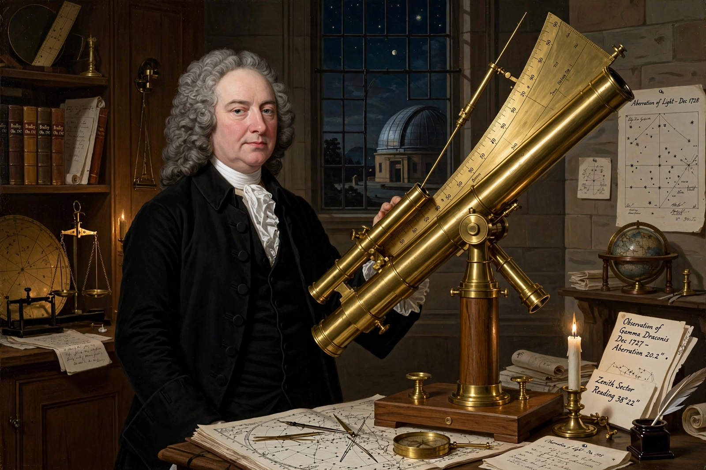

| James Bradley | |
|---|---|
| Born | March 1693, Sherborne, Gloucestershire, England |
| Died | 13 July 1762 (aged 69), Chalford, Gloucestershire |
| Known for | Aberration of light; nutation of the Earth's axis |
| Office | 3rd Astronomer Royal (1742–1762) |
| Awards | Copley Medal (1748) |

James Bradley (1693–1762) was an English astronomer and priest who served as the third Astronomer Royal from 1742. He is best known for two fundamental discoveries: the aberration of light (announced in 1729), which provided the first direct observational proof of the motion of the Earth and a measurement of the speed of light, and the nutation of the Earth's axis (announced in 1748), a subtle wobble with a period of about 18.6 years.
Working with Samuel Molyneux at Kew, Bradley used a zenith sector to search for stellar parallax in the star Gamma Draconis. He found an annual displacement of about 20 arcseconds, but in the wrong phase for parallax. Bradley realised the effect arose from combining the finite speed of light with the Earth's orbital velocity: starlight appears displaced in the direction of motion, like rain slanting into the face of a walking observer. His result implied a light travel time from the Sun of about 8 minutes 12 seconds, confirming Ole Rømer's finite speed of light and supporting the Copernican system.
Bradley succeeded Edmond Halley at the Royal Observatory, Greenwich in 1742. His Greenwich observations, made with instruments by George Graham and John Bird, were of unprecedented accuracy; reduced decades later by Friedrich Bessel, they formed the basis of the first reliable catalogue of stellar positions and of Bradley's successor tradition continued by George Biddell Airy. The office had earlier been held by John Flamsteed and Halley.